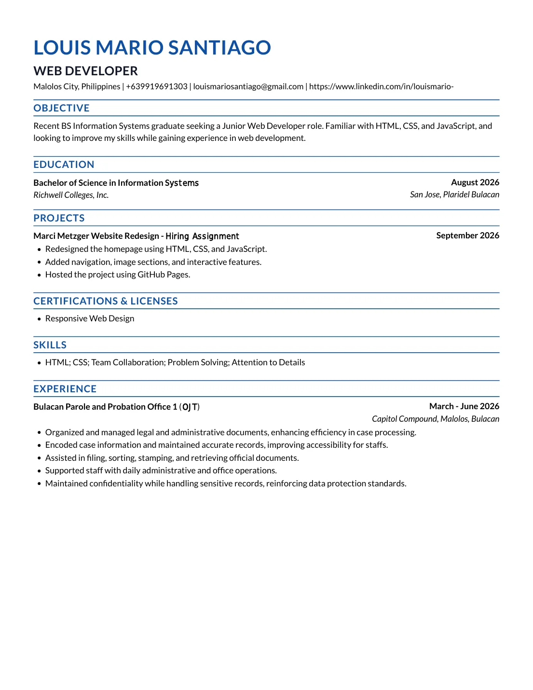

Hello, I'm
Louis Mario
Santiago
BS Information Systems Graduate
Frontend Development • HTML • CSS • JavaScript
About Me
I'm a BS Information Systems graduate focused on frontend development. I build websites with HTML, CSS and JavaScript, and I use my projects to keep learning and improving. I'm looking for an entry-level role where I can keep building and learn from a team.
Skills
Frontend
- HTML
- CSS
- JavaScript
Other
- Responsive Web Design
- Git/GitHub
- Basic Troubleshooting
Projects


Resume

Get In Touch
I'm looking for a junior web developer role. Feel free to reach out.
- Email louismariosantiago@gmail.com
- Phone +63 991 969 1303
- LinkedIn linkedin.com/in/louismario-
- GitHub github.com/Lucky-Buggy
- Location Malolos City, Philippines